Just as IVC tells us about fluid responsiveness, VExUS tells us about fluid tolerance — the other half of every volume decision.
🌊 What VExUS Means
Venous · Excess · UltraSound
The core idea: the more congested the venous system, the more back-flow appears in the veins. Doppler waveforms capture this back-flow — and that's what we'll measure across three vessels in the next slides.
🩻 Prerequisite: IVC > 2 cm
The VExUS protocol is intended for patients with evidence of venous congestion — typically a dilated IVC (> 2 cm). In patients without IVC dilation, VExUS adds little, because there's no congestion to characterize.
Next: the three vessels we'll examine — hepatic, portal, and renal interlobar.
Three veins downstream of the right atrium that tell us what venous congestion looks like — before clinical signs appear.
When right atrial pressure rises, it transmits backward into the systemic veins. Three vessels — chosen because they're accessible to bedside ultrasound and each tells a slightly different story — make up the VExUS protocol.
The three vessels reflect a progression: hepatic vein changes appear first, then portal pulsatility, then renal vein abnormalities. As congestion worsens, more vessels show abnormal patterns — and that progression is what the VExUS grade captures.
Two simple concepts that make hepatic vein interpretation make sense.
When you look at hepatic vein Doppler, you see two waves of forward flow per cardiac cycle:
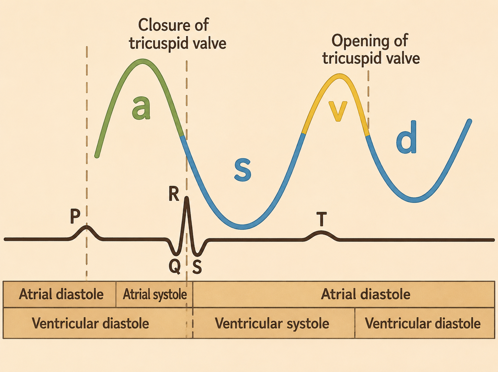
Hepatic vein Doppler — S and D waves shown relative to the ECG.
Watch each wave in motion
📌 Why does the S wave shrink first?
The S wave depends on the tricuspid annulus moving freely toward the cardiac apex. As right atrial pressure rises, this motion is dampened — so the S wave shrinks. The D wave is more robust to pressure changes. The next slide shows the resulting progression: S > D (normal) → S < D (mild) → S-wave reversal (severe).
Reference: Nephropocus
Three patterns to recognize — from normal physiology to severe congestion.
Hepatic vein flow reflects right atrial pressure during both systole and diastole. As congestion worsens, the S wave progressively flattens, then reverses.
🔬 How to obtain the hepatic vein Doppler
In this video, a curvilinear (abdominal) probe is used from the right mid-axillary line.
Three patterns
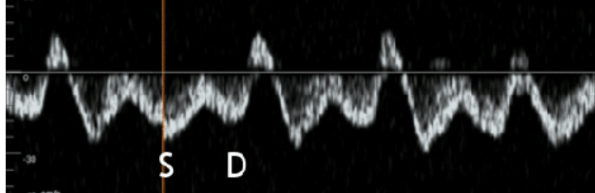
D" style="width:100%; border-radius:6px; margin-bottom:8px; display:block;">Normal RA pressure. S wave dominates.
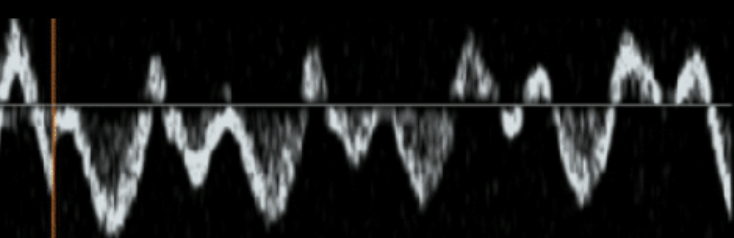
RA pressure mildly elevated; S wave attenuated.
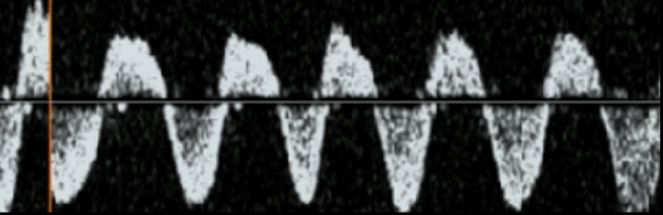
Markedly elevated RA pressure; S wave inverted below baseline.
Compare the heights of the S and D waves at end-expiration. If S is the bigger one, you're normal. If D is bigger, the patient is starting to congest. If the S wave is flipped upside-down (below baseline), it's severe.
Reference: Nephropocus
Three pulsatility patterns — from normal continuous flow to severe pulsatility.
Portal vein flow is normally near-continuous because the hepatic sinusoids dampen upstream pressure changes. As right atrial pressure rises and sinusoidal congestion develops, that dampening fails — and the portal vein starts to pulsate.
🔬 How to obtain the portal vein Doppler
Same video as the hepatic vein section — portal vein approach starts at 4:50.
Three patterns
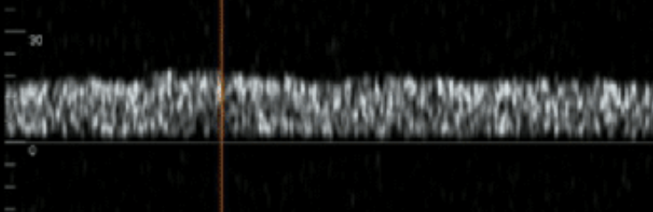
Near-continuous flow; hepatic sinusoids dampen pulsations.
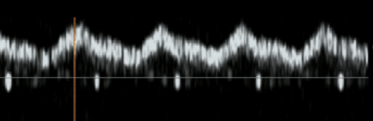
Pulsatility appears as sinusoidal dampening starts to fail.
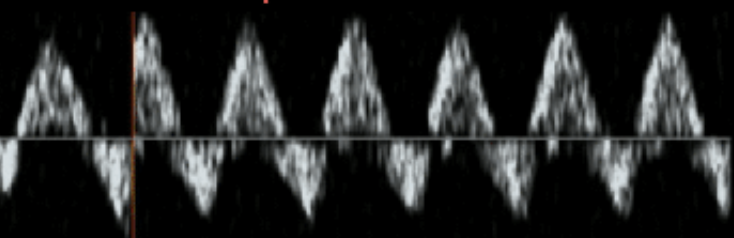
High pulsatility; may show flow reversal at troughs.
PI quantifies how much the portal vein velocity varies between peak and trough:
PI = (Vmax − Vmin) ÷ Vmax × 100%
In practice, eyeball it: a flat trace = normal; a clearly pulsatile trace = mild; a trace that drops to (or below) zero between peaks = severe.
Reference: Nephropocus
Three patterns reflecting venous outflow obstruction in the kidney — from normal continuous flow to monophasic.
📌 Heads-up — this section is optional
The renal interlobar vein is the hardest of the three to obtain reliably. If you find this view difficult, don't worry — on a later slide we'll cover mVExUS, a modified protocol that omits this vessel and may give comparable results.
🔬 How to obtain the renal interlobar vein Doppler
Same video as the prior sections — renal interlobar vein approach starts at 6:40.
Three patterns
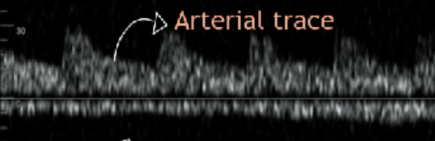
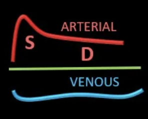
Smooth, continuous flow — no separation between S and D.
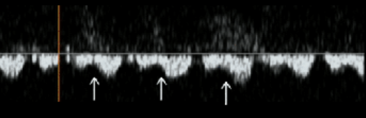
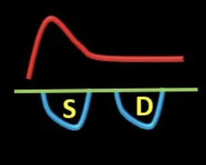
Distinct S and D components appear as flow becomes pulsatile.
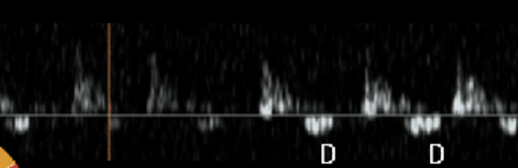
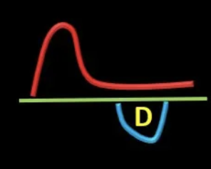
Only the D component remains; S wave absent.
Compare the waveform morphology — not amplitudes. Continuous (single smooth trace) is normal. Biphasic (two distinct humps per cardiac cycle) is mild. Monophasic (only one hump, the D component) is severe.
Reference: Nephropocus
Combining IVC dilation with the three vessel patterns into a single congestion grade.
The VExUS grade summarizes congestion severity using two ingredients: (1) IVC dilation as the entry gate, and (2) the worst Doppler pattern among the three vessels. The grade then guides clinical decisions — with Grade ≥ 2 typically prompting a change in management.
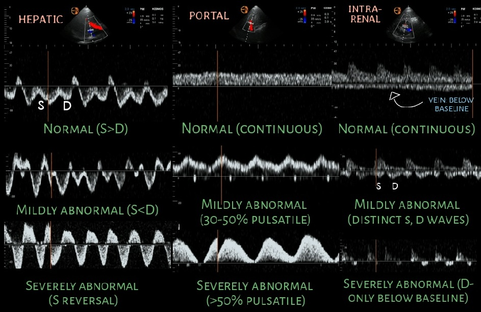
VExUS grading combines IVC dilation with the severity of each vessel's Doppler pattern.
Grades 0 – 3 with outcomes
IVC < 2 cm or all 3 vessels show normal patterns.
IVC ≥ 2 cm + at least one mildly abnormal vessel; no severe findings.
IVC ≥ 2 cm + at least one vessel with a severe pattern.
IVC ≥ 2 cm + ≥ 2 vessels with severe patterns.
Hazard ratios for developing acute kidney injury (versus Grade 0), from the original VExUS validation study: Beaubien-Souligny W, et al. Ultrasound J 2020;12(1):16. Population: post-cardiac surgery patients on mechanical ventilation. See the next slide for limitations.
🩺 Clinical takeaway
Grade ≥ 2 suggests a potential need for diuresis — these patients have severe enough congestion that further fluid is likely to harm, and decongestive therapy may be warranted.
Reference: Nephropocus
The original VExUS validation was in a specific population — and follow-up studies in different populations have shown mixed results.
VExUS is best validated in cardiac / perioperative settings, where the original hazard ratios apply. Its role in sepsis is uncertain — current evidence does not support using VExUS grade to predict AKI or mortality in septic ICU patients. Always interpret VExUS findings in clinical context rather than in isolation.
Modified VExUS (mVExUS) is a simplified protocol that drops the renal interlobar vein — easier to obtain, with comparable performance in detecting elevated RA pressure.
Standard vs. modified protocol
A direct comparison of mVExUS (hepatic + portal only) vs. full VExUS for identifying elevated right atrial pressure found comparable diagnostic performance — supporting the practical use of the simplified protocol.
🩺 Clinical bottom line
When the renal view is technically difficult or time is short, mVExUS (hepatic + portal) is a reasonable bedside substitute. Full VExUS (with renal) remains the validated reference for grading.
Combining IVC and VExUS into a single bedside decision — and when each tool actually changes management.
Practical workflow
Decision matrix — responsiveness × tolerance
You scored ≤ 50%. Would you like to review the content slides, or retake the quiz now?
A quick-reference recap of the VExUS protocol.
Interpret VExUS in clinical context. The protocol is best validated in cardiac and perioperative populations (HR 2.65–3.69 for AKI in Grade 2–3). Its role in sepsis is uncertain — a 2025 follow-up study did not replicate the AKI/mortality association in septic ICU patients.
Coming up next
A brief 3-module synthesis, then three case-based scenarios to put IVC + VExUS together in real clinical decisions.